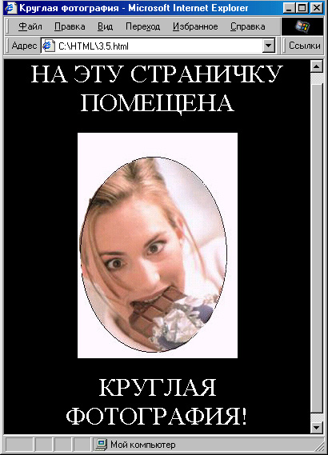
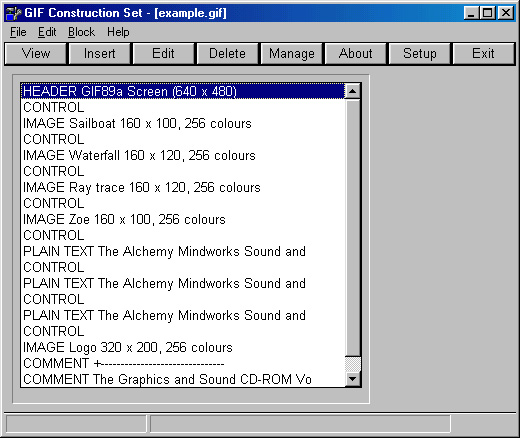

|
|
|
|
3.2. Графические форматы Интернета
В предыдущем разделе мы рассмотрели способы использования графических элементов на веб-странице. Но, как вы, вероятно, знаете, существует великое множество различных форматов для представления графики. Какими же из них следует пользоваться в данном случае?
Несмотря на то что графических форматов очень много, в качестве стандартных для использования в Интернете приняты только три из них. Это CompuServe Graphic Interchange Format, или, попросту, GIF, формат JPEG (названный по имени группы создателей — Joint Picture Expert Group) и сравнительно новый формат PNG (Portable Network Graphics). Кроме того, на скорую стандартизацию претендуют форматы DjVu (этот формат оптимизирован для представления документов, содержащих одновременно текст и графику) и LuRaTech Wavelet (LWF) — формат, отличающийся возможностью высокой степени сжатия при довольно высоком качестве. Он отличается тем, что при сжатии можно заранее установить размер будущего файла.
Однако пока создателю веб-страниц лучше ориентироваться лишь на два наиболее распространенных в Интернете формата — GIF и JPEG. Они поддерживаются всеми броузерами и не требуют каких-либо дополнительных модулей для отображения.
Оба эти формата были созданы для хранения графики в сжатом виде. Формат JPEG при этом использует метод “сжатия с потерями”, то есть при сжатии часть информации безвозвратно теряется. Влияет ли это на качество изображения? Безусловно, но при умелом обращении потерю качества можно сделать настолько малозаметной, что ею можно пренебречь.
Формат GIF
Формат GIF предназначен в основном для “рисованных” изображений: чертежей, графиков и т. д. В нем используется так называемая индекси- рованная цветовая палитра. Максимальное количество цветов в ней — 256. Так что не стоит сохранять в формате GIF, например, многоцветные фотографии — размер файла останется довольно большим, а качество изображения заметно ухудшится за счет уменьшения количества цветов. Зато файлы, содержащие много одноцветных точек, расположенных рядом, сжимаются с помощью формата GIF до небольших размеров. Кроме того, . формат GIF имеет еще ряд достоинств.

Рис. 3.6. Страничка с круглой фотографией
Во-первых, GIF-рисунок может быть “прозрачным”. То есть, можно один цвет удалить из палитры GIF, определив его как прозрачный. Тогда при отображении, сквозь точки, окрашенные в этот цвет, на рисунке будет виден фон веб-страницы. Это очень помогает при создании рисунков фигурной формы. Например, этим приемом можно поместить на веб-страницу круглую фотографию. На самом-то деле она, конечно, прямоугольная, просто края ее сделаны прозрачными (рис. 3.6).
Исходный текст этой странички самый простой:
<!DOCTYPE HTML PUBLIC "-//W3C//DTD HTML 4.0 TRANSITIONAL//EN">
<HTML>
<HEAD>
<TITLE>Круглая фотография</ТITLE>
</НЕАD>
<BODY BACKGROUND="' Images/back3.jpg" BGCOLOR="#000000" TEXT="#FFFFFF" LINK="Yellow" VLINK="Yellow" ALINK="Yellow">
<DIV ALIGN="center">
<FONT SIZE="+3">HA ЭТУ СТРАНИЧКУ ПОМЕЩЕНА </FONT>
<BR>
<IMG SRC="Images/yooiee2.gif" WIDTH="480" HEIGHT="400" BORDER="0" ALT="ФОТОГРАФИЯ"<BR>
<FONT SIZE="+3">КРУГЛАЯ ФОТОГРАФИЯ! </FONT>
</DIV>
</BODY>
</HTML>
Однако дело здесь не в HTML-коде, а в GIF-файле. Цвет в его углах объявлен как прозрачный, и в результате мы можем видеть “сквозь него” фон странички, так что создается впечатление, фотография действительно круглая. Этим приемом иногда оживляют “прямоугольный” мир компьютерных окон...
Другое достоинство GIF-рисунков — возможность загружать их чересстрочным методом. Если графический файл имеет большой размер и грузится из Интернета долго, пользователь увидит сначала как бы нечеткие контуры будущего рисунка, а по мере загрузки изображение будет постепенно “проявляться”, что достигается очень простым приемом — изменением порядка загрузки строк изображения. Для этого необходимо при сохранении GIF-файла не забыть включить режим Interlaced (Чересстрочный).
И, наконец, еще одно достоинство GIF-файлов — они могут содержать не только статичные рисунки, но и целые анимационные фрагменты! На самом деле эти фрагменты представляют собой последовательности нескольких статичных кадров, а также информацию о том, сколько времени каждый кадр должен задерживаться на экране. Для создания подобных анимаций существуют специальные программы, например WWW Gif Animator (рис. 3.7). В такую программу можно загрузить несколько графических файлов подряд, а также использовать некоторые встроенные эффекты. Однако помните, что каждый лишний кадр ведет к увеличению размера файла, и если сделать анимированный GIF-файл, например из 500 кадров, очень мало кто сможет дождаться окончания его загрузки.

Рис. 3.7. Общий вид программы WWW Gif Animator
Формат JPEG
Теперь несколько слов о другом распространенном графическом формате — JPEG (файлы этого формата могут иметь расширение как .jpeg, так и .jpg). В отличие от GIF, этот формат предназначен для изображений типа фотографий. Файлы этого формата не ограничены палитрой из 256 цветов, при желании они могут содержать до 16 777 216 (то есть 2 24 ) цветов.
При сохранении JPEG-файла любая графическая программа указать степень сжатия, которую обычно измеряют в некоторых условных единицах от 1 до 100 (иногда от 1 до 10). При этом большее число соответствует меньшей степени сжатия, но лучшему качеству. И здесь важно найти хороший баланс. В большинстве случаев сжатие порядка 30-40% дает вполне качественный результат.
Итак, старайтесь во всех случаях обходиться этими двумя форматами. Если же возникла ужасная необходимость воспользоваться каким-либо другим форматом, потрудитесь выяснить, какие броузеры способны его отображать и какие дополнительные модули для этого нужны. Сообщите об этом на своей страничке рядом с файлом “экзотического” формата и поставьте гиперссылки на сайты, откуда можно эти дополнительные средства загрузить. А еще лучше будет, если в качестве альтернативного варианта поместите также изображение в формате GIF или JPEG
|
|
|
|